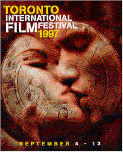
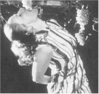
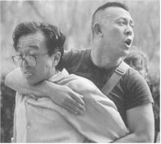
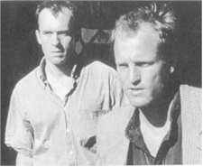
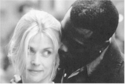

Contents | Features | Reviews | News | Archives | Store

Contents | Features | Reviews | News | Archives | Store
|  | 22nd Toronto
International |
Judging from the entries this year, it seems that Canadian filmmakers are still on a trajectory of kinkiness and oddball themes; whether or not Canadians are going through a tacit rebellion against the national reputation of niceness and blandness is anyone’s guess.
The winner of the Air Canada People’s Choice
Award for Best Picture (and co-winner of the Juried Toronto-CITY TV Award for Best
Canadian Film with The Sweet Hereafter), The Hanging Garden, fits rather
neatly into this transgressive trend. Tyro filmmaker Thom Fitzgerald has really
established a high bar for Canadian filmmaking and for himself with this film.  At
first glance, The Hanging Garden defies all attempts to categorize it within a
genre. Even the Perspectives Canada representative couldn’t really define it,
explaining at first that the film was "beautiful" and then "not really
beautiful." Accepting that this was going to be one of these genre-busting films that
would either be incredibly good or a walk-out special (there are no in-between responses
to this sort of thing), I thanked her and booked the film into my schedule. It was as good
and as confusing as the rep implied, both beautiful and not beautiful. Perhaps the best
description of its overall effect is one of poisoned lyricism. The Hanging Garden is
the story of a gay man who returns to the family home in Nova Scotia to witness his
sister’s wedding. The family, obviously, is dysfunctional as anything Edward Albee
could have imaged: Dad’s a vicious drunk, Sis is a foul-mouthed nympho, her
bridegroom is bisexual, Grandma’s senile and Mom is desperately trying to pretend
that nothing is wrong. The family’s story, told in frequent flashbacks, also appears
to suggest that the gay son may or may not have hanged himself from a tree in the garden
when an adolescent. Ridiculous, you say, because he shows up at the wedding. But, for much
of the film, you really can’t differentiate between reality and fantasy. There is the
usual mix of tragedy and redemption; however, the characters are so well-constructed and
the cast digs into their complexities with such gusto that there are many moments worth
pondering, if you have the stomach for it. Rights to The Hanging Garden were bought
for half a million dollars by MGM, so expect this film to do at least a major art-house
run just before the end of the year.
At
first glance, The Hanging Garden defies all attempts to categorize it within a
genre. Even the Perspectives Canada representative couldn’t really define it,
explaining at first that the film was "beautiful" and then "not really
beautiful." Accepting that this was going to be one of these genre-busting films that
would either be incredibly good or a walk-out special (there are no in-between responses
to this sort of thing), I thanked her and booked the film into my schedule. It was as good
and as confusing as the rep implied, both beautiful and not beautiful. Perhaps the best
description of its overall effect is one of poisoned lyricism. The Hanging Garden is
the story of a gay man who returns to the family home in Nova Scotia to witness his
sister’s wedding. The family, obviously, is dysfunctional as anything Edward Albee
could have imaged: Dad’s a vicious drunk, Sis is a foul-mouthed nympho, her
bridegroom is bisexual, Grandma’s senile and Mom is desperately trying to pretend
that nothing is wrong. The family’s story, told in frequent flashbacks, also appears
to suggest that the gay son may or may not have hanged himself from a tree in the garden
when an adolescent. Ridiculous, you say, because he shows up at the wedding. But, for much
of the film, you really can’t differentiate between reality and fantasy. There is the
usual mix of tragedy and redemption; however, the characters are so well-constructed and
the cast digs into their complexities with such gusto that there are many moments worth
pondering, if you have the stomach for it. Rights to The Hanging Garden were bought
for half a million dollars by MGM, so expect this film to do at least a major art-house
run just before the end of the year.
Our favorite practitioner of guerilla journalism, Michael
Moore (of Roger and Me), is back with his newest film, The Big One. This
time, our Michael decides to see America and sell his latest book on downsizing, Downsize
This! Random Thoughts From An Unarmed American. At the same time, unbeknownst to his
publishing house, he decides to take on some more corporate baddies, including the owners
of the Leaf Candy Company (Johnson Controls), which wants to decimate a small town in
Illinois called Centralia by depriving it of its only employer. The employees, you see,
have been too efficient at performing their jobs; only in the perverse corporate climate
of the 90s could you possibly work yourself out of full employment. There’s an
interview with a prisoner whose job it is to field inquires on an 800 line for Trans World
Airways.  Michael also takes on sneaker tycoon Phil Knight, who seems to have developed
blindness when it comes to the employment conditions of those who toil in Nike’s
third-world factories. Having avoided the threats of arrest meted out by the myrmidons at
Johnson Controls, Michael’s meeting with Knight is most telling, revealing the
combination of designer-suit elegance and fiscal ruthlessness that is Nike’s CEO.
Phil would really like to give a damn about those Indonesian workers, he really would, but
that would just play too much havoc with the bottom line; when Moore presents Knight with
two airline tickets to fly over and inspect one of Nike’s factories in person, Knight
is trapped, and simply doesn’t give in. He doesn’t want to fly and he
doesn’t want to know. If nothing else, The Big One is a revealing glimpse of
how those who have benefited from downsizing choose to define both fiscal recovery and
morality for the rest of society. Moore isn’t buying any of it, castigating those who
talk a good game of free enterprise when, in Moore’s words, "they were the last
to believe in it." There has to be an element of morality in business, he argues;
otherwise, GM would be free to sell crack instead of cars to make a bigger profit. You may
disagree with Moore’s tactics, but his message is heartfelt and ineluctable for
anyone with a conscience.
Michael also takes on sneaker tycoon Phil Knight, who seems to have developed
blindness when it comes to the employment conditions of those who toil in Nike’s
third-world factories. Having avoided the threats of arrest meted out by the myrmidons at
Johnson Controls, Michael’s meeting with Knight is most telling, revealing the
combination of designer-suit elegance and fiscal ruthlessness that is Nike’s CEO.
Phil would really like to give a damn about those Indonesian workers, he really would, but
that would just play too much havoc with the bottom line; when Moore presents Knight with
two airline tickets to fly over and inspect one of Nike’s factories in person, Knight
is trapped, and simply doesn’t give in. He doesn’t want to fly and he
doesn’t want to know. If nothing else, The Big One is a revealing glimpse of
how those who have benefited from downsizing choose to define both fiscal recovery and
morality for the rest of society. Moore isn’t buying any of it, castigating those who
talk a good game of free enterprise when, in Moore’s words, "they were the last
to believe in it." There has to be an element of morality in business, he argues;
otherwise, GM would be free to sell crack instead of cars to make a bigger profit. You may
disagree with Moore’s tactics, but his message is heartfelt and ineluctable for
anyone with a conscience.
"The only enemy is convention, and love is free to weave its golden web wherever it may," So began the unintentionally hilarious offering from Philip and Belinda Haas, Blood Oranges. After viewing this two-hour excursion into self-indulgence, both metaphorical and, alas, literal, one longed desperately for some conventionality, if only to rescue the filmmakers from the web in which they had trapped themselves. Featuring Sheryl Lee and Charles Dance as a trippy-dippy hippy couple who ensnare another couple in a menange a quatre in Italy in 1970. All involved trip blissfully through the blood oranges scattered artistically over the floors in Sheryl and Charles’ little villa (but don’t trip over the oranges), until the usual mix of jealousy and a dark secret conspire to ruin this sexual utopia (it’s amazing how sexual excess and the exploitation of marriage vows is never perceived in these films to be destructive in any way). Damn those nasty bourgeois values anyway, since they sate the appetite for "tasting the love lunch" (the film’s euphemism for adultery, which poor Dance is obliged to utter several times during the course of the film, to ever-increasing laughter and hooting from the audience). Lee’s acting style – replete with unconvincing interjections of "Baby" every time she opened her mouth to let the audience know that she "made the scene, man" was a chronic annoyance (one might argue that the high point of her career was playing Laura Palmer’s corpse in Twin Peaks; God knows, she certainly was more lifelike there than she is here) and Dance simply seems like a nice man caught in a peep-show raid; he goes through the motions, but he doesn’t believe what he’s saying, and neither do (can?) we. From the same couple who brought us the equally silly and hysterically unconvincing Angels and Insects, Blood Oranges is thematically bankrupt swill masquerading as art. Never mind the oranges; from the comments I heard during the screenings, several audience members would have been just as happy with a basketful of rotten tomatoes, suitable for hurling at the more offensive scenes..
The Chinese cinematic enfant terrible (at least in the eyes of Chinese authorities) Zhang Yimou has taken a drastic new tack in his latest film, Keep Cool. Not only is this Zhang’s first film to be set in a modern, urban environment, but the slow pans that characterized much of his earlier filmmaking seems to have been tossed out the window. The first forty minutes of Keep Cool employs a neo-Godardian technique of rapid editing and jump cuts galore; to call the overall effect vertiginous is barely adequate. Zhang captures all of the social and financial upheaval that has placed a stamp on the sudden surge of prosperity in Beijing. The story involves a love affair gone wrong between an uncouth bookseller and a gold-digging beauty. Into the middle of their battle drops an unfortunate researcher, who demands only restitution for the loss of his laptop computer. Zhang, however, invests this threadbare plot with a healthy dollop of humor, both subversive and straight-up, and the result, thanks to his engaging cast, is a wonderfully wry romp through the clash of mores that is modern-day China.
Going from Hard Eight to Boogie Nights is a
considerable leap into mainline status for director Paul Thomas Anderson, not to mention a
dramatic improvement in quality filmmaking. His newest film, a fictionalized expose of the
porn industry during the 1970s combined with a rags-to-riches-to-rags tale that would have
done Susan Hayward proud, is a marvelous encapsulation of the atmosphere and lifestyle of
the period, not to mention the changes that ensue in both lifestyle and the porn industry
under the onslaught of video tape, and what happens to those who cannot or will not
conform to change. Notable in this film is Mark Wahlberg in the Susan Hayward role, and
Burt Reynolds and Julianne Moore as the "parents" who take him in and teach him
the business. Watch for the final sequence, in which Wahlberg does his own interpretation
of Jake LaMotta from Raging Bull; you’ll either laugh or shake your head at
the shamefully obvious parody. One thing is certain, however: after seeing this sequence,
the phrase, "a bright shining star," will forever contain untold nuances that
you wish it didn’t. Since the print shown at Toronto was, according to a
pre-screening announcement, lacking both final color correction and soundtrack credits,
it’s safe to assume that some changes may be made prior to the release date, but the
film should retain much of its original structure and music (look for a more-detailed
review of Boogie Nights when the film goes into official release on – at last
check – October 17).
not to mention the changes that ensue in both lifestyle and the porn industry
under the onslaught of video tape, and what happens to those who cannot or will not
conform to change. Notable in this film is Mark Wahlberg in the Susan Hayward role, and
Burt Reynolds and Julianne Moore as the "parents" who take him in and teach him
the business. Watch for the final sequence, in which Wahlberg does his own interpretation
of Jake LaMotta from Raging Bull; you’ll either laugh or shake your head at
the shamefully obvious parody. One thing is certain, however: after seeing this sequence,
the phrase, "a bright shining star," will forever contain untold nuances that
you wish it didn’t. Since the print shown at Toronto was, according to a
pre-screening announcement, lacking both final color correction and soundtrack credits,
it’s safe to assume that some changes may be made prior to the release date, but the
film should retain much of its original structure and music (look for a more-detailed
review of Boogie Nights when the film goes into official release on – at last
check – October 17).
The Spanish Prisoner is another of David Mamet’s ventures into directing, and it is an intriguing tale of how reliance upon appearances and actively nursing one’s own resentments can be hazardous to your health, as poor Campbell Scott is forced to acknowledge. He plays a business whiz named Joe Ross with a new and radical strategy, referred to, mysteriously, as "The Process," that is to be the lifeline of his company, but he also becomes a most unwitting victim of corporate espionage. After it is stolen, and he is framed for murder, he must enlist someone to help him, but reliable assistance is in woefully short supply. The entire enterprise is redolent with Hitchcockian plot devices and twists (shades of North by Northwest, or, The Man Who Knew Too Much, if you prefer), but it is a highly entertaining update of the Master’s work, once you get past the first forty minutes, which is overflowing with the sort of insufferably arch dialogue that Mamet can fall prey to. On the brighter side, Steve Martin executes his role as the mysterious Jimmy Dell with utter precision and his own innate sense of irony keeps those first forty minutes from falling into redundancy.
Welcome to Sarajevo, from Michael Winterbottom, is a somewhat overly melodramatic but powerful morality play about life in the city during 1992 – the very height of the Bosnian fiasco. There is a touching subplot concerning the desire of an English journalist (Stephen Dillane)to adopt a young girl from an orphanage, and the burnout suffered by other journalists such as Flynn (Woody Harrelson adding yet more luster to his big-screen career), but this film’s real strength comes from its ability to convey the two central problems that allowed this war to go on unchecked: the crookedness and cynicism of the combatants and of institutions such as the U.N., which refused to employ the force necessary to take all of the idiots and bully-boys involved and knock their damned heads together. The film lays bare the terminal state of moral rot and shameless cowardice at all levels and among all parties. From watching Welcome, it becomes all too evident that the U.S., Britain and Germany indulged only in inadequate, because pro forma, attempts to stop the bloodshed, and it would have been more honest of them to simply have let everyone involved kill each other, as they really were indifferent to the plight of the war’s victims (in a deliciously ironic "sequel," occurring just this week, the U.S. decided to override the decision of the court at the Hague to punish Serbian hard-liners for retaining the war criminal Karadzic as head of their political party. The reason, according to the Ambassador in charge of supervising elections in Bosnia, Robert Frowick, is the shopworn fear that election supervisors might otherwise be harmed, although it isn’t clear if threats have been made against them. The U.S. Special Envoy to Bosnia, Robert Gelbard, promised to support Frowick’s decision. And the madness continues…). The real title of this film should have been Goodbye, Conscience.
Finally, Mike Figgis’ new film, One Night Stand, a dramedy whose title is self-explanatory, has all of the right elements in place: fine acting from Wesley Snipes, Natassja Kinksi and (especially) Robert Downey, Jr. and a great script with, most importantly, one sly shaggy-dog-story ending. The film keeps you off-kilter with a considerable amount of unpredictability mixed with grace to keep the imbalance intriguing rather than irritating. Remember: before committing adultery, remember to ask just whom your intended partner in crime has as friends or relations; you may have more than lust in common.
Contents | Features | Reviews | News | Archives | Store
Copyright © 1999 by Nitrate Productions, Inc. All Rights Reserved.